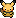

常青森林Viridian Forest
- 地區
- 關都
- 種類
- 道路與野外
- 天氣
- 晴朗 28%・陰天 26%・下雨 24%・打雷 6%・霧 16%
野生寶可夢
白天
| 寶可夢 | 等級 | 機率 |
|---|---|---|
 綠毛蟲 綠毛蟲 | 3-5 | 13.9% |
| 獨角蟲 | 3-5 | 13.9% |
 喇叭芽 喇叭芽 | 4-7 | 11.9% |
 派拉斯 派拉斯 | 4-7 | 9.9% |
 小拉達 小拉達 | 3-6 | 9.9% |
 波波 波波 | 4-7 | 7.92% |
 尼多朗 尼多朗 | 4-7 | 7.92% |
| 鐵甲蛹 | 5-7 | 4.95% |
 鐵殼蛹 鐵殼蛹 | 5-7 | 4.95% |
 蛋蛋 蛋蛋 | 5-7 | 3.96% |
 皮卡丘 | 4-7 | 3.96% |
 皮丘 皮丘 | 3-5 | 2.97% 稀有 |
 伊布 伊布 | 5-7 | 1.98% 稀有 |
 飛天螳螂 飛天螳螂 | 6-7 | 0.99% 稀有 |
 凱羅斯 凱羅斯 | 6-7 | 0.99% 稀有 |
夜晚
 走路草
走路草 毛球
毛球 尼多蘭
尼多蘭 超音蝠
超音蝠 阿柏蛇
阿柏蛇百分比是該地圖、該時段每次生成野生寶可夢時抽到這一隻的機率。天氣若符合寶可夢的屬性，出現率會提高。